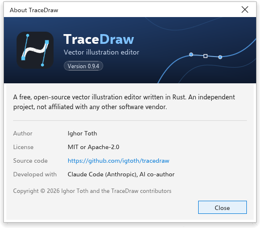

حول TraceDraw والتحديثات
TraceDraw مجاني ومفتوح المصدر. تشرح هذه الصفحة كيف ترى الإصدار الذي لديك، وكيف تحصل على إصدار أحدث، وأين تطلب المساعدة.
مربع حول
اختر تعليمات > حول TraceDraw لترى الإصدار الذي تشغله والمؤلف والترخيص ورابطًا إلى الشيفرة المصدرية وما بُني به البرنامج. اضغط إغلاق أو Enter أو Esc لإغلاقه.

التحقق من التحديثات
على سطح المكتب، يمكن لـ TraceDraw أن يخبرك عند صدور إصدار أحدث.
للتحقق الآن:
- اختر تعليمات > التحديثات.
- يسأل TraceDraw صفحة إصدارات المشروع عن أحدث إصدار ويخبرك هل هو أحدث من إصدارك. لا تُعرض أبدًا الإصدارات التجريبية ولا البنيات الليلية.
- عند وجود إصدار أحدث، اختر ما تفعله:
- تنزيل يفتح تنزيل الملف المناسب لنظامك (المثبّت أو الأرشيف المحمول على Windows، وصورة القرص المناسبة لمعالج جهاز Mac، وAppImage أو الأرشيف على Linux). ثم يتولى مثبّت نظامك التثبيت.
- ملاحظات الإصدار تفتح قائمة تغييرات ذلك الإصدار.
- تخطي هذا الإصدار يتوقف عن عرض ذلك الإصدار.
- إغلاق يغلق المربع.
عندما يعمل TraceDraw كملف AppImage على Linux، قد يعرض المربع أيضًا تثبيت: ينزّل AppImage الجديد بجوار الذي تشغله، ويتحقق من أن التنزيل كامل وأصلي، ثم يضعه مكان الملف القديم. يبدأ الإصدار الجديد في المرة التالية التي تفتح فيها TraceDraw. وإذا لم يجتز شيء التحقق، يبقى الملف القديم كما هو ويخبرك المربع بالسبب.
إذا فشل التحقق (مثلًا دون اتصال بالإنترنت)، يذكر المربع ذلك ويعرض صفحة الإصدارات.

التحقق التلقائي
في أدوات > خيارات > عام، صفحة عام، إعداد للتحقق من التحديثات عند البدء. يكون مفعّلًا في البداية: يتحقق TraceDraw بهدوء مرة في اليوم عند بدئه، ولا ينبهك إلا عند صدور إصدار أحدث لم تتخطه.
شاشة الترحيب
شاشة الترحيب هي علامة التبويب الأولى عند بدء TraceDraw. منها يمكنك إنشاء رسم، وفتح أحد آخر الرسومات التي استخدمتها (لكل منها صورة مصغرة؛ مسح القائمة ينساها)، والبدء من قالب، وقراءة الأخبار، والعثور على مواد التعلم. اختر تعليمات > شاشة الترحيب لإعادتها. تفتح تعليمات > دروس فيديو ودليل البدء السريع ودليل المستخدم صفحة التعلم فيها، ويفتح ما الجديد؟ أخبارها.
المجتمع والدعم
- تعليمات > المجتمع يفتح منتدى نقاش المشروع، حيث يمكنك طرح الأسئلة ومشاركة الأفكار.
- تعليمات > الدعم يفتح متتبع المشكلات، حيث يمكنك الإبلاغ عن مشكلة.
- تعليمات > إعدادات الرسائل يفتح الخيارات التي تُضبط فيها رسائل TraceDraw.